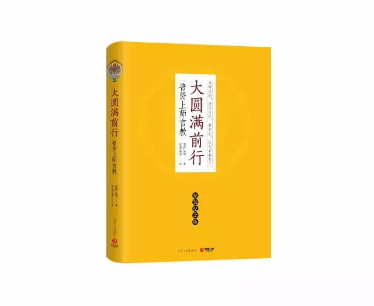

一、分类
1、根本地狱，包括八寒八热
2、近边地狱
3、孤独地狱
二、八热地狱
1、复活地狱
受苦状况：聚集到烧铁地上火红的余烬中间，以业力幻化的兵器相互残杀，死而复生，轮番交替，一日一夜万死万生
转生原因：触犯戒律、杀害众生或较轻的恶罪没有忏悔
寿量：自寿五百年，人寿一万六千二百亿年
2、黑绳地狱
受苦状况：在炽热燃烧的铁地上，以铁锯锯割划分的黑线，之后伤口马上粘连，反复感受剖割之苦
转生原因：对父母、亲友、眷属等加以损害，并通过妄语欺骗他们
寿量：自寿千年，人寿十二万亿多年
3、众合地狱
受苦状况：1）被关在铁臼内，以如须弥山般的铁锤使劲敲打，日日夜夜死去再复活。2）在川谷中所有相对的山岭，变成以前杀害过得动物头像，角抵而斗，山碰撞时死去，山分开时复活。
转生原因：杀过猪、羊、兔子等许多动物
寿量：自寿两千年，人寿一百零三万多亿年
4、号叫地狱
受苦状况：身陷无门的炙热铁室，火焰四起
转生原因：语意三门不如法，尤其常说离间语
寿量：自寿两千年，人寿一百零三万多亿年
5、大号叫地狱
受苦状况：在双重铁门的炽热铁室中，用铁锤等锤打
转生原因：盗窃三宝财物
寿量：自寿八千年
6、烧热地狱
受苦状况：在三千大千世界的铁器内，装满沸腾的铁水，反复熬煮，一旦浮出水面将被铁锤打晕，如此往复
转生原因：生前焚烧山川、森林、房屋等，乃至烧害众生
寿量：自寿一万六千年
7、极热地狱
受苦状况：火势熊熊的铁屋内，用三尖铁矛自下而上穿破身体，且用燃烧铁片缠裹身体
转生原因：对别人无因诽谤
寿量：自寿长达半个中劫
8、无间地狱
受苦状况：在以十六个近边地狱围绕的燃火铁屋内，借助风力将堆积如山的有情身体与烈火燃成一体，要饱尝前七种地狱的所有痛苦
转生原因：1）犯五无间罪2）入密宗后对三恩德上师产生邪见、不恭敬、诽谤，并一直没有忏悔3）违犯密乘根本戒，对金刚道友怀恨在心，没有忏悔
寿量：自寿一中劫
三、八寒地狱
1、具疱地狱：寒冷到身上不时长出水泡。
2、疱裂地狱：水泡破裂形成疱疮伤口，不同经论中名字不同。
3、紧牙地狱：寒冷难忍而咬紧牙关。
4、阿啾啾地狱：不断发出呼寒叫冷的声音。
5、矐矐婆地狱：呼寒叫冷的声音已经间断，只能长声叹息。
6、裂如青莲花地狱：皮肤冻成青色，裂成四瓣。
7、裂如红莲花地狱：皮下之肉冻成红色，裂成八瓣。
8、裂如大莲花地狱：皮下之肉冻成黑红色，裂成十六瓣、三十二瓣或无数瓣；冻裂的伤口中爬入铁喙昆虫咬噬。
转生原因：
1、让众生在寒冷的冰或水里冻死，或剥众生的衣服，令其受寒冷逼迫。
2、持断见：认为因果、前后世不存在，尤以无神论最为严重。
3、毁谤圣者。
地狱寿量：
1、二百藏升的大盆里装满芝麻，具疱地狱每一百年从中取一粒芝麻，直至全部取完，为具疱地狱寿量。
2、其余地狱从上而下寿量呈二十倍递增。
四、近边地狱
1、煻煨坑地狱
来自：无间地狱解脱
所见：黑漆漆的凉荫或妙壕，想去乘凉休息
所感：陷入剧烈燃烧的炭火坑，烧得骨肉焦烂
转生原因：
1、居士或出家人没有守护禁戒
2、往昔把众生活活扔至火坑、热砂、火炭中，或出家后破戒之人
2、尸粪泥地狱
来自：从煻煨坑地狱解脱出来
所见：远方一条河流，想去饮用
所感：陷入臭气冲天、弥漫昆虫的污泥内，并被具有铁喙的昆虫啄食
转生原因：1、生前诈现威仪，以邪命养活。2、把有生命的众生扔进粪坑等不净处、转生为人时啖食生命、令蜈蚣等撕咬其它小动物。
3、利刃原地狱
来自：从尸粪泥地狱解脱出来
所见：青青的草原
所感：大地长满形状如草、锋利燃火的铁刺，刺透众生的双脚，抬起之时恢复如初，如此往复
转生原因：宣说邪道，破坏正法、为非作歹
4、剑叶林地狱
来自：从利刃原地狱解脱出来
所见：枝繁叶茂、舒心悦意的森林
所感：铁树上长着叶状的利剑等兵器，将众生碎尸万段，又恢复如初，如此往复
转生原因：1、以不良的心行谋害别人。2、生前喜欢打仗，用兵器伤人。
5、铁柱山地狱
状况：听到山顶上往昔恋人呼唤自己，忍不住向山上攀登，树叶变成向下的兵器刺穿并斩断身体。到了山顶，身体恢复如初，此时乌鸦、鹰鹫等飞禽又前来啄食眼油，乃至身体的一切支分。听到山脚下呼唤声，向山下奔去，树叶转向上方，刺入前胸，穿透后背。到了山脚，铁男、铁女啖食头颅，嘴角流出脑浆
转生原因：邪欲，毁坏梵净行、破戒律的出家人或行邪淫的在家人
五、孤独地狱
（1）命名
1、有些论师认为：独一无伴，孤苦伶仃
2、无垢光尊者认为：并不以数量微少而安立
（2）位置
没有固定，痛苦也是变化不定
1、有些无情物是有生命的，以蕴识感受痛苦
2、有些看似旁生，实际是孤独地狱众生
（3）转生原因
1、享受亡财，但未好好超度
2、血肉供养
3、接受不合理的财物供养
4、乱用信财

备注：以上内容整理自《大圆满前行引导文》广释，索达吉堪布仁波切讲记。